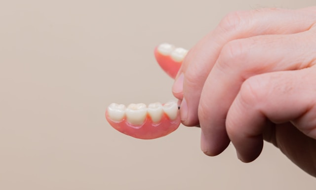
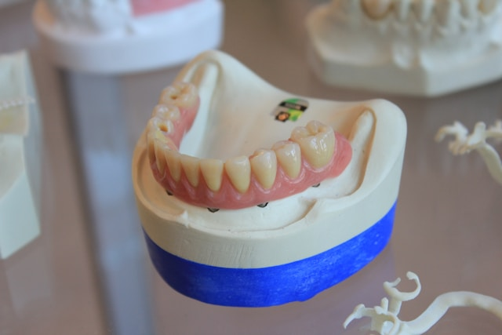

Precisión y calidad en cada trabajo dental.
Laboratorio dental especializado en la fabricación y reparación de trabajos dentales para odontólogos y pacientes.

Nuestras Soluciones
Ofrecemos una amplia gama de servicios especializados con los más altos estándares de higiene y precisión clínica.
Plan de relajación
Protege los dientes y alivia bruxismo. Fabricadas en acrílico con ajuste preciso.
Coronas dentales
Restauraciones de forma y función en porcelana o cerámica de alta resistencia.
Prótesis Flexibles
Reemplaza piezas dentales de forma funcional y económica con base de acrílico.
Prótesis Parciales
Estructura metálica para máxima resistencia y durabilidad, combinada con acrílico.
Prótesis metálicas
Estructura metálica para máxima resistencia y durabilidad, combinada con acrílico.
Planos de altura
Confeccionados en cera y acrílico sobre los modelos de estudio del paciente
Pernos muñón
Refuerza dientes dañados internamente con estructuras de metal o fibra.
Cubetas individuales
Cubetas fabricadas de forma personalizada para cada paciente, que ayudan a lograr impresiones dentales más precisas y confiables.
Blanqueamiento
Tratamiento estético que aclara el color de los dientes, mejorando la apariencia de la sonrisa.
Puentes fijos de porcelana
Estéticas y cómodas sin ganchos metálicos, se adaptan naturalmente a la encía.
Reparaciones
Reparación inmediata de prótesis, ajustes y rebases para devolver funcionalidad.

Compromiso con la Calidad
-
check
Materiales Certificados
Utilizamos únicamente insumos odontológicos de grado médico con trazabilidad garantizada.
-
check
Tiempos de Entrega Reales
Cumplimos rigurosamente con los plazos acordados para no retrasar los tratamientos.
Sergio Aguilera
Titulado en el Instituto Profesional Los Leones
Trabajo en el área dental hace varios años, realizando cada caso de forma personalizada. Me preocupo de cada detalle para entregar un trabajo bien hecho y que cumpla con lo que realmente se necesita.
"Mi compromiso es con cada paciente y odontólogo. Entendemos que detrás de cada pieza dental hay una sonrisa y una calidad de vida que restaurar. Por ello, la precisión no es negociable, es nuestra firma."